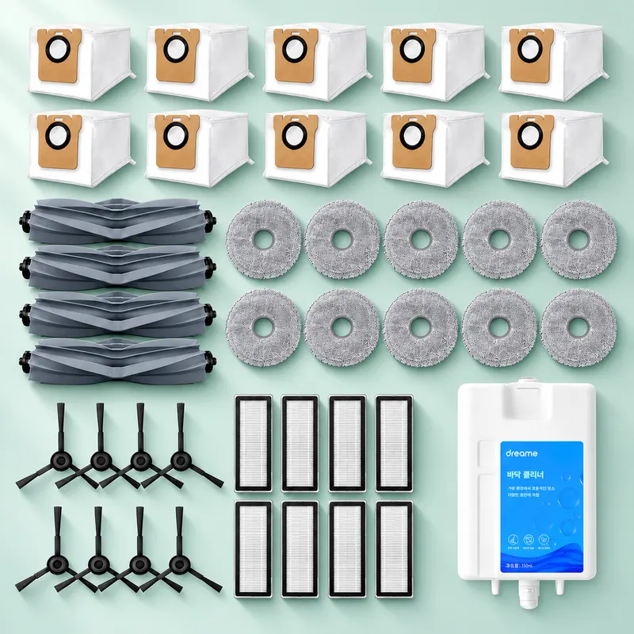
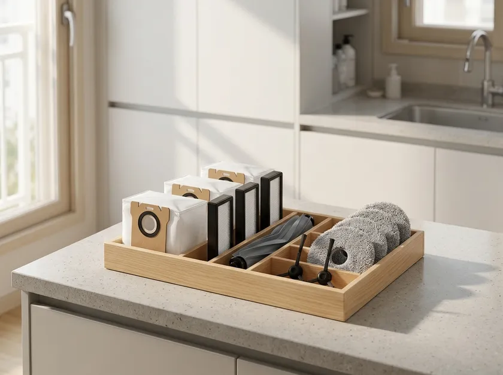

드리미 (Dreame)
드리미 L20·X30 울트라 흡입력·물걸레 리프레시｜오주문 없는 1년 소모품 세트
글·구성: 제이상점 · 기종별 1:1 호환 실물 점검 · 교체 주기 비교표 · 스마트스토어 패키지 안내

핵심 관리 · 선택 체크포인트
- 청소 예약은 매일 꼬박꼬박 돌아가는데 요즘 부쩍 드리미 L20·X30 울트라를 1년 가까이 쓰다
- 냄새와 흡입력 차이를 만드는 드리미 L20·X30 울트라 교대 케어 포인트: 실사용 만족도를 가르는 핵심 부위는 단연 세로형 블랙 프레임 워셔블 필터와 브라운 크라프트 칼라 대용량 더스트백입니다.
- 드리미 L20·X30 울트라 냄새·흡입력 복원 부위별 점검 기준표: 번거로운 분해 수리 전에 아래 세 가지 핵심 구간만 순서대로 교대 점검해 주셔도 바닥 뽀송함과 집진 효율이 눈에 띄게 달라집니다.
- 여분 교대가 편해지는 드리미 L20·X30 울트라 기간별 옵션 선택 가이드: L20·X30 울트라는 내구성이 좋아 소모품만 제때 리프레시해 주면 새 기기 못지않은 컨디션을 오래 유지합니다.
- 현재 대표 구성 기준가 72,000원대(옵션·할인 혜택에 따라 스토어 결제 화면 기준 상이)로 운영 중이니 우리 집 청소 주기와 남은 재고를 대조한 뒤 제이상점 드리미 L20 울트라·X30 울트라 스마트스토어 상세 옵션에서 가장 실속 있는 구성을 선택해 보세요.
실물 부품 디테일 · 관리 구성 이미지



부품 규격 · 점검 기준표
| 집중 관리 포인트 | 드리미 L20·X30 울트라 적용 부품 규격 | 쾌적함 유지하는 실전 교대 루틴 |
|---|---|---|
| 구매 전 3초 규격 구별법 | 필터 ‘세로형’ + 더스트백 ‘갈색 판지’ 확인 | 기존 본체 먼지통 필터가 세로로 긴 형태라면 L20·X30 전용 세트가 정답 |
| 묵은 냄새·흡입력 리프레시 | 새 원형 극세사 패드 + 마른 예비 필터 | 오래 써서 납작해진 걸레와 눈막힘된 필터만 동시에 갈아도 체감 성능 회복 |
| 스테이션 세척수 깔끔 관리 | 드리미 전용 세제 + 오수통 패킹 건조 | 물걸레 세척 시 전용 클리너 사용으로 배관 물때와 걸레 쉰내 예방 |
💡 교체 주기가 겹치는 필터·브러시·물걸레·더스트백은 단품 배송비를 여러 번 내기보다 드리미 L20 Ultra 기간별 세트(3개월·6개월·1년)로 미리 구비해 두면 물세척 후 24시간 교대 건조까지 끊김 없이 관리할 수 있습니다.
자주 묻는 질문 (FAQ)
Q. 세로형 블랙 필터를 물로 씻어도 흡입력이 예전만큼 돌아오지 않는 이유는 무엇인가요?
A. 워셔블 필터라도 수개월간 반복 세척하면 미세 부직포 기공 깊숙이 유분 섞인 미세먼지가 고착되어 통기성이 떨어집니다. 2~3개월 주기로 새 필터로 교체해 주면 도크와 본체 모터 부담이 확 줄어듭니다.
Q. 크라프트 판지 홀더 더스트백을 버릴 때 먼지가 날리지 않게 빼는 요령이 있나요?
A. 스테이션 커버를 열고 카드 상단 손잡이를 위로 당기면 슬라이드 셔터가 입구를 닫아 주므로 먼지 날림 없이 깔끔하게 꺼내 버릴 수 있습니다. 세척조 위생까지 챙기시려면 드리미 전용 바닥 클리너 세제 1L (1병·2병 옵션) 구성도 함께 참고해 보세요.
제이상점 1:1 검수 추천 패키지 · 구매 안내
![[정품] 드리미 세제 전용 세척액 세정제 소모품 X40 X50 X60](../../assets/img/dreame-cleaner-product-3adea154.webp)
☑️ 주문 전 확인해 두면 좋은 제이상점 안심 포인트
· 기종별 1:1 전용 규격 검수: 모델명·연식에 맞는 호환·정품 구성을 검수해 오주문 불안을 줄였습니다.
· 해외직배송 미리 주문 팁: 중국 구매대행·해외직배송 상품이므로 마지막 여분 1개를 꺼내 쓰는 시점에 개인통관고유부호와 함께 여유 있게 주문해 두시면 훨씬 경제적인 비용으로 끊김 없이 교체하실 수 있습니다.
· 기종별 1:1 전용 규격 검수: 모델명·연식에 맞는 호환·정품 구성을 검수해 오주문 불안을 줄였습니다.
· 해외직배송 미리 주문 팁: 중국 구매대행·해외직배송 상품이므로 마지막 여분 1개를 꺼내 쓰는 시점에 개인통관고유부호와 함께 여유 있게 주문해 두시면 훨씬 경제적인 비용으로 끊김 없이 교체하실 수 있습니다.
📖 더 많은 가정 내 사용 스토리와 상세 후기가 궁금하시다면
📱 네이버 블로그 모바일 원문 보기 ↗